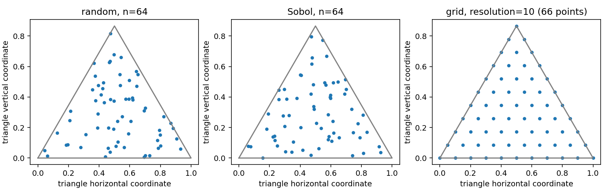

Sampling and grids
Choose points for the task
Sampling selects parameter locations, not output measurements. Use it to plan
experiments, evaluate a fitted model across its domain, construct a fixed
objective-minimization sample set, or build a candidate pool for active
learning. A sample is a Points object containing barycentric parameter
rows and cell IDs. To train supervised regression, obtain response values at
those locations and create Samples(points, values).
The unified sampler takes a compiled BezierSpace. You do not supply a
second geometry description that might disagree with the model. The same
operation works for a triangle, a product such as a prism, or an assembled
multi-cell domain. Sampling does not change polynomial degree or coefficients;
it changes which parts of that domain are observed or evaluated.
Use random points for unbiased exploration of the stated cell distribution, Sobol-derived points for an alternative spread within cells, and grids when you need reproducible boundaries and lattice structure. None is universally best: random draws can leave gaps, finite quasi-random sets can still cluster, and grids become very large in higher dimensions.
Generate observations and evaluation points
import torch
from torch_bsf import BezierSpace, Samples, fit
from torch_bsf.sampling import sample, grid
space = BezierSpace.simplex(2, degree=2)
random_points = sample(space, 64, seed=7)
sobol_points = sample(space, 64, method="sobol", seed=7)
evaluation = grid(space, resolution=10)
t = random_points.parameters
values = (t[:, 1].square() + t[:, 2])[:, None]
result = fit(space, Samples(random_points, values)).require_success()
predictions = result.model(evaluation)
assert predictions.shape == (66, 1)
assert torch.allclose(t.sum(1), torch.ones(64, dtype=torch.float64))
This scalar target lies exactly in the degree-two space. For an actual
simulator, values must come from the simulator in the same row order.
sample does not add noise, run an experiment, or infer target values from
an existing model. Predicting at random locations can show the model’s shape,
but cannot establish its accuracy without independent true responses.


Fig. 16 Three ways to evaluate the same triangle: 64 random points, 64 Sobol-derived points, and a resolution-ten lattice with 66 points. The scatter plots show coverage rather than regression accuracy. Grid points include edges and vertices; interior random draws almost surely do not.
Reproduce this comparison with python examples/generate_guide_figures.py.
All random draws use local seed 7. The figure’s Cartesian triangle embedding
is only for display; the public inputs remain three barycentric coordinates.
Distribution and cell weights
Within a selected cell, each simplex factor is sampled uniformly by drawing independent exponential values and normalizing their sum. For a triangle, this is uniform area in its barycentric chart. For products, factors are sampled independently. There is no separate uniform distribution over the model’s curved output image: equal parameter-area regions can have very different physical surface areas after mapping through the model.
For assembled spaces, the default selects maximal cells with equal probability.
It does not infer geometric volume, economic importance or the amount of data
already collected in each cell. A small and a large physical patch therefore
receive the same expected count under the default. Supply
cell_weights={cell_id: weight} if this is not the intended experiment.
Weights must be finite, nonnegative and have positive total mass. They are
normalized, so multiplying every cell weight by a common constant does not
change the distribution. Unspecified cells receive zero probability.
Increasing one cell’s relative weight increases its expected share of the
fixed total n and reduces the share available to others. Counts remain
random; a small positive probability does not guarantee an observation in
that cell. If every cell needs a minimum count, draw a separate fixed-size
batch for each cell and assemble it with Points.from_cells. The sampler
can address explicit face cells through weights, while defaults cover maximal
cells only.
Boundary observations often matter for Pareto extremes or constraints. Random interior sampling is not an adequate guarantee of endpoint or face coverage. Include vertices and edges deliberately with a grid or a cell-specific batch. A multi-cell batch preserves its IDs even when two rows map to the same physical point on a shared boundary. Use those IDs consistently when obtaining responses and appending observations.
Adjust counts, methods and seeds
n is a nonnegative integer and controls the number of returned rows.
Increasing it improves expected coverage and reduces Monte Carlo variability,
while increasing response-evaluation, model-evaluation and storage cost.
n=0 returns an empty point collection; it cannot be used as a nonempty
optimization sample set. A larger n does not increase degree, introduce
new controls, or automatically correct biased measurement locations.
method="sobol" uses scrambled Sobol uniforms followed by exponential
normalization within each factor. It uses PyTorch, not SciPy, and needs no
optional sampling extra. Do not interpret the nonlinear normalized points
as a Cartesian Sobol lattice with all of its original discrepancy guarantees.
Cell selection remains categorical random sampling for either method.
Switching methods therefore changes within-cell coordinates, not the default
equal-cell allocation rule.
seed controls local generators. Repeating the same call with the same
space and seed reproduces the points, while leaving global PyTorch RNG state
untouched. seed=None requests a fresh local seed. For a controlled
comparison of two fitting settings, generate one point set and reuse it rather
than redrawing between fits. For uncertainty about experiment design, repeat
whole comparisons under several recorded seeds.
A useful workflow starts with a modest count, plots coverage, fits, and then checks errors on a separate evaluation set. Increase the count or add boundary points where independent residuals remain large. If measurements are costly, compare this uniform expansion with Explicit ensembles and active learning. If the model is underparameterized, more observations cannot replace the missing flexibility; check degree using Cross-validation and degree search.
For deterministic point counts and product-grid growth, continue to
Grid sampling. When using points for minimize, note that its sample
set stays fixed across iterations; increasing iteration count alone does not
improve approximation of the continuous-domain expectation. Draw a larger
fixed set, then assess the final model on independent points.
Sample a product without mixing its factors
prism = BezierSpace.simploid((2, 1), degree=(2, 1))
prism_points = sample(prism, 80, seed=9)
p = prism_points.parameters
assert p.shape == (80, 5)
assert torch.allclose(p[:, :3].sum(1), torch.ones(80, dtype=torch.float64))
assert torch.allclose(p[:, 3:].sum(1), torch.ones(80, dtype=torch.float64))
The first block selects a triangle location and the second an independent interval location. Together they fill the prism in the geometric overview. Normalizing the five-column row to one would move both blocks outside their valid simplex constraints. Uniform product sampling is useful for joint exploration, but it does not guarantee repeated observations at particular interval slices.
If the experiment requires the same triangle locations at several fixed operating conditions, explicitly combine those locations with chosen interval blocks. This structured design answers a different question from independent random pairs. Keep a separate validation design so repeating slices does not conceal interpolation error between operating conditions.